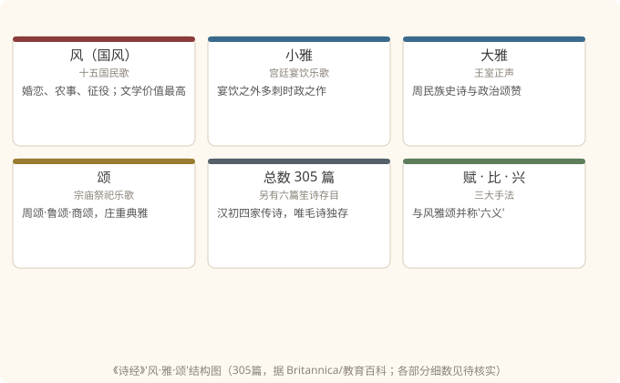

诗经
| 作者 | 周代无名氏（集体创作与编纂，相传经孔子编订） |
|---|---|
| 成书/出版 | 所收诗作于西周初年至春秋中叶（约前11世纪—前6世纪），编定于先秦 詩經 — 教育部《教育百科》（台湾）（百科全书） |
| 国别/地区 | 中国 |
| 时代 | 古代 · 先秦 |
| 体裁 | 诗歌总集 |
| 语言 | 汉语（上古雅言，多四言句式） |

《诗经》'风·雅·颂'结构图（305篇，据 Britannica/教育百科；各部分细数见待核实）（主题·结构图）
二、创作背景
《诗经》是中国第一部诗歌总集（Britannica），收录作品的时间跨度约五百年，采自周初至春秋中叶（台湾教育部教育百科）。这些诗原是可以配乐演唱的歌词，分为庙堂乐章、宫廷乐歌与各国民歌（Britannica 另称 temple, court and folk songs）。
编者问题：作品'非一时一地一人所作'（教育百科）。传统说法认为孔子曾编订并以此教授弟子——Britannica 持'相传归于孔子（前551—前479）'的口径，并指出孔子常引诗评诗（'乐而不淫、哀而不伤'出自《论语》）。今学界一般认为编纂是长期的集体过程，孔子可能有整理之功，'删诗说'不可确证。
秦火之后，汉初传《诗》者有齐、鲁、韩、毛四家（教育百科），前三家先后亡佚，唯毛诗（汉代毛苌作序）流传至今，成为通行本（Britannica）。
三、内容脉络
全书收诗 305 篇（另有六篇'笙诗'仅存篇目），按音乐性质分为风、雅、颂三大类（Britannica；305 篇数字见 Britannica 与教育百科）。
《风》（国风）收录周王室之外各诸侯国的民歌情歌，多写婚恋、农事与征役之苦，是全书文学价值最高的部分；《雅》分大、小雅，多为西周王畿的宫廷雅乐，宴饮之外亦有讽刺时政的政治诗；《颂》为宗庙祭祀乐歌，庄重典雅（Britannica 对三类性质的概括）。
代表性名篇中，《关雎》《蒹葭》写爱情与追求，《七月》绘农事全年，《采薇》写戍卒归途之悲，《硕鼠》以大鼠刺贪刺虐。'昔我往矣，杨柳依依；今我来思，雨雪霏霏'等句千古传诵。
四、主要人物表
| 人物 | 身份 | 说明 |
|---|---|---|
| （无特定主人公） | 集体性作品 | 各篇人物为采诗中的农人、征人、思妇、贵族与祭祀者，无贯穿全书的主人公 |
五、主题与艺术特点
- 现实精神：'饥者歌其食，劳者歌其事'，直面农事、兵役、婚恋与时政，奠定中国文学的写实传统。
- 赋比兴的手法体系：直陈其事（赋）、以彼喻此（比）、托物起兴（兴），'兴'尤其塑造了中国诗歌借物起情的思维方式。
- 重章叠句的音乐性结构：章句回环复沓、一唱三叹，源于口头歌唱传统，形成独特的形式美。
- 经典化与教化：入汉后列为五经之一，孔子以'无邪'许之，成为历代教育与'温柔敦厚'诗教的源头（Britannica 引《论语》评语）。
六、影响与评论
- Britannica：中国第一部诗歌总集，五经（五Wujing）之一。
Shijing (Classic of Poetry) — Encyclopaedia Britannica（百科全书） - 孔子在《论语》中赞其'乐而不淫，哀而不伤'（Britannica 引述），并以学诗为立言之本，确立其在儒家教育中的核心地位。
Shijing (Classic of Poetry) — Encyclopaedia Britannica（百科全书） - 汉初四家传《诗》，唯毛诗传世（教育百科），毛传郑笺孔疏构成两千余年《诗》学注疏传统的主干。
詩經 — 教育部《教育百科》（台湾）（百科全书） - 屈原以降的历代诗人（《楚辞》对四言的突破、汉魏乐府、唐代古体）都在与《诗经》的对话中确立自身；'风雅''比兴'成为中国诗学的核心范畴。
詩經 — 教育部《教育百科》（台湾）（百科全书）
七、阅读建议
难点
- 上古汉语词汇与今天差异大，名物（草木鸟兽、器服制度）冷僻，须依赖注释。
- 四言句式与重章叠句对现代读者略显单调，需要出声朗读体会其音乐性。
- 《诗序》的教化解说常与诗的本义不合（如将情诗解为讽刺），宜对照今人译注择善而从。
- 程俊英、蒋见元《诗经注析》（中华书局）：题解、今译、注释齐备，适合通读。
- 陈子展《诗经直解》（复旦大学出版社）：文言直解，学风谨严。
- 向熹《诗经语文论集》等工具书可辅助解决名物与词汇问题。
先读《国风》中《关雎》《蒹葭》《氓》《采薇》等名篇建立语感 → 再读《小雅》与《大雅》的名篇 → 最后按专题（婚恋/农事/战争/宴饮）跳读《颂》。
八、待核实
- 风、雅、颂三类的精确篇数（通说为：国风160、小雅74、大雅31、颂40，合计305）本页所用来源（Britannica、教育百科）只载总数305，细分数字待另核。
- 孔子'删诗说'（古文经学传统说法）真伪，学界至今无定论。
- 305篇之外'六笙诗'（有目无辞）的具体篇名与性质，待核。
- 具体诗篇的作年与地域归属（如《商颂》作年为宋或殷的争论）学界有分歧。
本页主要来源
相关作品：